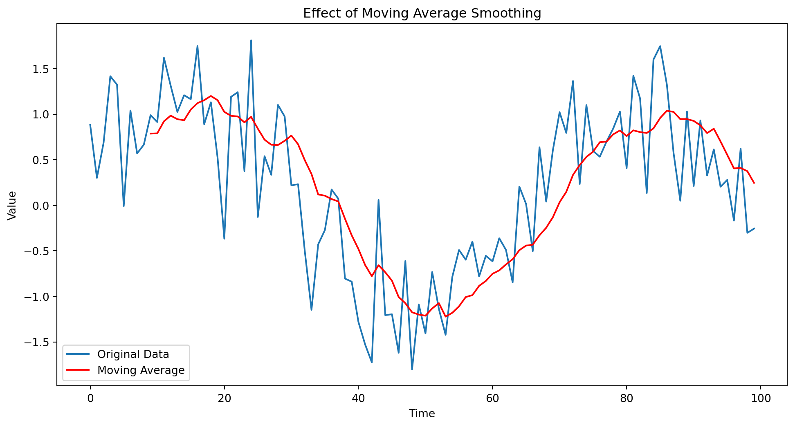
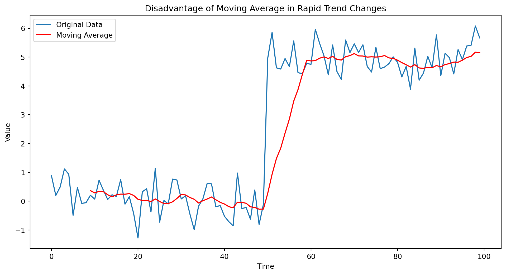
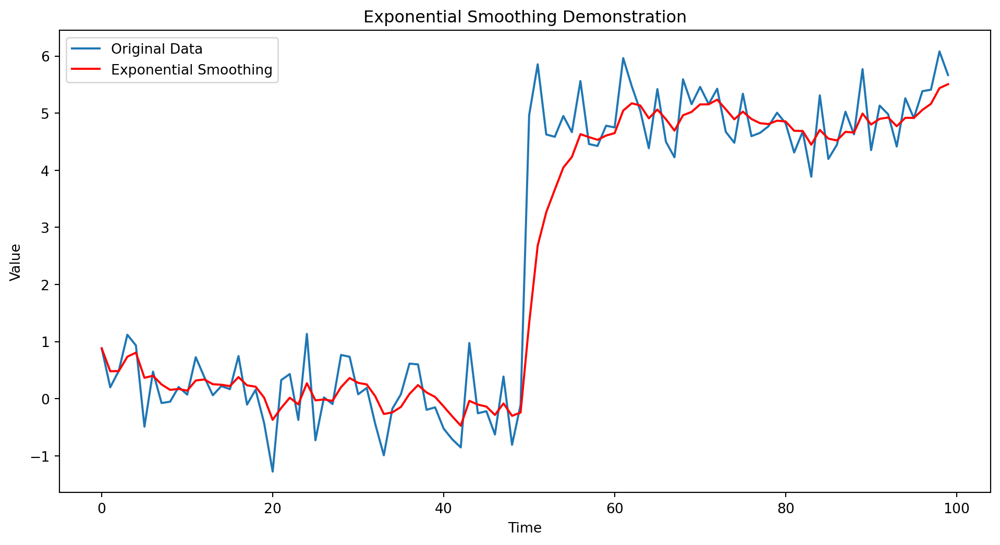
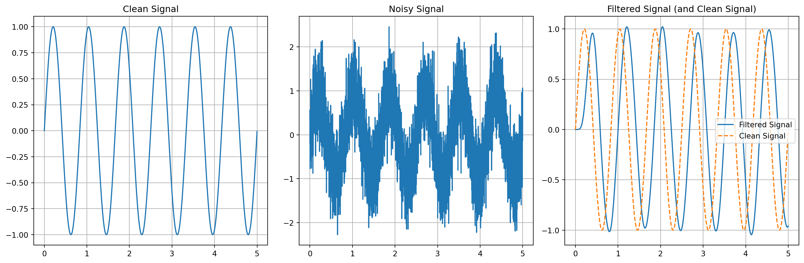
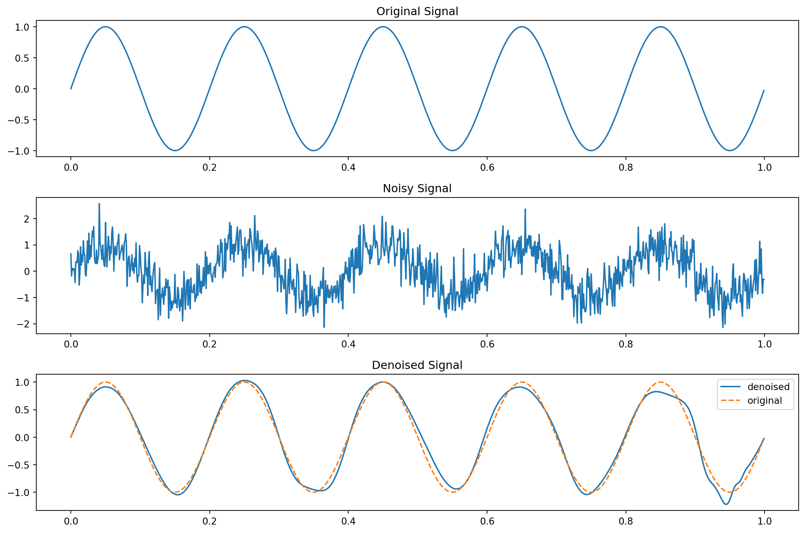
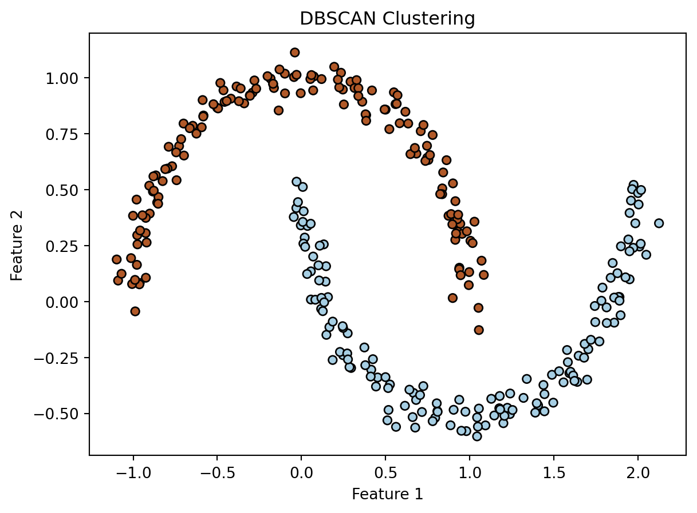
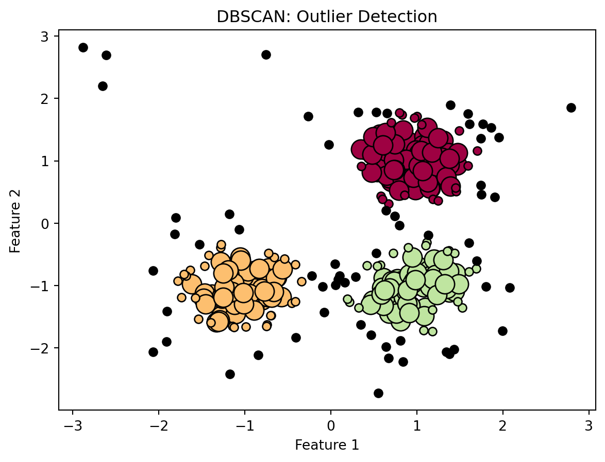

Data preprocessing is a critical step in the machine learning pipeline. It involves preparing and cleaning the raw data before feeding it into a model. The aim is to make the data more suitable for modeling, improve its quality, and increase the overall efficiency of the learning process. Here are some of the common data preprocessing techniques in machine learning:
11.1 Data Cleaning
Data cleaning is a crucial step in the data preprocessing phase, involving the correction or removal of incorrect, corrupted, incorrectly formatted, duplicate, or incomplete data within a dataset. We next describe some of various data cleaning techniques, with real-world examples and Python code for each.
11.1.1 Handling Missing Values
Handling missing values is a fundamental aspect of data cleaning in machine learning and data analysis. Missing data can arise due to various reasons like errors during data collection, processing, or transmission. Proper handling of these missing values is crucial as they can lead to biased or incorrect results. Some of the common techniques are summarized next.
Note that the choice of method depends on the nature of the data, the extent of missingness, and the analysis or modeling task. It is important to consider the potential biases introduced by missing data and the chosen method to handle it. In some cases, it might be informative to create an additional binary feature indicating whether data was missing.
11.1.1.1 Mean/Median/Mode Imputation
Replacing missing values with the mean, median, or mode of the column. This method is simple and works well with numerical data. The mean is typically used for normal distributions, while the median is better for skewed distributions. The mode is used for categorical data.
Let us consider an engineering application involving sensor data from a manufacturing process. In such settings, sensors might record various parameters like temperature, pressure, and operational speed of machinery. It is common to have missing values due to sensor malfunctions or transmission errors. We’ll create a Python example where we handle missing values in such a dataset using mean and median imputation:
import pandas as pdimport numpy as np# Example DataFrame representing sensor data in a manufacturing process# Columns: Temperature (°C), Pressure (kPa), Speed (RPM)data = {'Temperature': [200, 205, np.nan, 210, 208, np.nan, 207],'Pressure': [30, 35, 34, np.nan, 36, 37, np.nan],'Speed': [1500, 1495, 1500, 1502, np.nan, 1498, 1501]}df = pd.DataFrame(data)# Mean Imputation for Temperature# Assuming temperature readings are relatively stable and normally distributeddf['Temperature'].fillna(df['Temperature'].mean(), inplace=True)# Median Imputation for Pressure# Pressure might have occasional spikes; median is more robust to outliersdf['Pressure'].fillna(df['Pressure'].median(), inplace=True)# Speed is a crucial operational parameter, so we might decide not to impute and keep it as isprint(df)
In this example, we have a DataFrame df representing sensor data. We use:
Mean Imputation for the ‘Temperature’ column. We assume temperature readings are normally distributed and don’t vary wildly in short periods, which is often the case in controlled industrial environments with Gaussian sensor noise.
Median Imputation for the ‘Pressure’ column, as pressure can have occasional spikes due to sudden changes in the manufacturing process. Median imputation helps to mitigate the impact of such outliers.
We choose not to impute values for the ‘Speed’ column, considering that missing values in this crucial operational parameter might need special attention or indicate critical issues that imputation might mask.
This example illustrates how different imputation methods can be applied in an engineering context, considering the nature and criticality of the data being handled.
11.1.1.2 Custom Value
Custom value imputation is a technique where missing data in a dataset is filled with a predefined or custom value. This approach is particularly useful in scenarios where it is important to distinctly identify or separate the missing data from the naturally occurring data. In engineering contexts, this method can be used to maintain consistency, signal a specific condition, or ensure that the processing algorithms function correctly without introducing biases.
Consider a dataset from an industrial monitoring system that tracks the operational status of various machines in a factory. The dataset contains readings such as temperature, pressure, and a status code indicating the machine’s condition (e.g., 0 for normal, 1 for maintenance required, etc.). Sometimes, the status code might be missing due to communication issues or sensor errors.
In such a case, we might choose to fill the missing status codes with a custom value that does not overlap with existing status codes. For example, we could use -1 to indicate missing or unknown status. This approach makes it clear that the data was missing and not a part of the normal operational readings.
import pandas as pdimport numpy as np# Sample DataFrame representing machine operational datadata = {'Temperature': [200, 205, 210, 208, 207],'Pressure': [30, 35, 34, 36, 37],'StatusCode': [0, 1, np.nan, 0, np.nan] # 0: normal, 1: maintenance required}df = pd.DataFrame(data)# Custom Value Imputation for StatusCode# -1 will indicate missing or unknown statusdf['StatusCode'].fillna(-1, inplace=True)print(df)
In this code we create a DataFrame df with ‘Temperature’, ‘Pressure’, and ‘StatusCode’ columns. Missing values in the ‘StatusCode’ column are replaced with -1, a custom value indicating unknown status. By using a custom value for imputation, engineers and analysts can easily distinguish between normal data and data that was missing or not recorded, which is essential for accurate monitoring and decision-making in industrial settings.
11.1.1.3 Predictive Imputation
Predictive imputation is a sophisticated method of handling missing data in a dataset. Unlike simpler methods like mean or median imputation, predictive imputation uses the relationships found in the non-missing parts of the data to predict and fill in the missing values. This approach often leads to more accurate and realistic data imputation, especially when the missing data is not random and depends on other variables in the dataset.
The process begins with the development of a model using the portion of the dataset that does not contain any missing values. This model is tailored to predict the missing variable using other related variables in the dataset as inputs. Essentially, it learns the relationships and patterns present in the complete data to estimate the missing values.
Once the model is established and trained, it is then employed to predict the missing values. For each instance in the dataset where the target variable is missing, the model uses the available, non-missing data to make a prediction. It applies the relationships it has learned to estimate the missing value as accurately as possible.
The final step in predictive imputation is the substitution of these predicted values back into the dataset. The missing values are replaced with these newly predicted values, thus filling the gaps in the dataset. This method ensures a more informed and potentially accurate way of dealing with missing data, as it takes into account the underlying patterns and correlations in the data, unlike simpler methods such as mean or median imputation. However, the success of predictive imputation largely depends on the accuracy and appropriateness of the predictive model used, making it crucial to choose and tune the model carefully based on the specific characteristics of the data. If physics-based models are available, it can be also be used predict missing data.
Predictive imputation stands out for its ability to yield more accurate results compared to simpler imputation methods, largely because it takes into account the correlations and relationships between different variables in the dataset. This makes it especially advantageous in situations where the missingness of data is not random but instead is influenced by other variables, allowing for a more context-aware approach to filling in missing values. However, this technique comes with its own set of challenges. The process of building and validating an appropriate predictive model can be complex and time-consuming, requiring careful consideration and expertise. There’s also a risk of overfitting, particularly if the model is too complex, which can result in imputations that are less reliable as they may overly conform to the specifics of the available data rather than general patterns. Furthermore, the effectiveness of predictive imputation hinges significantly on the assumptions underpinning the chosen model and its alignment with the data’s characteristics. Any misalignment or incorrect assumptions can adversely affect the accuracy of the imputed values.
Let’s consider an engineering scenario where we have a dataset from a wind turbine farm. This dataset includes variables like wind speed, turbine rotation speed, and power output. Sometimes, due to sensor errors or data transmission issues, we might have missing values in the power output, which we want to predict based on the other variables.
We’ll use a simple linear regression model for predictive imputation. This example assumes that a linear relationship exists between the wind speed, turbine rotation speed, and the power output of the turbines. Here’s the Python code demonstrating this:
import pandas as pdfrom sklearn.linear_model import LinearRegressionfrom sklearn.model_selection import train_test_splitfrom sklearn.impute import SimpleImputerimport numpy as np# Sample DataFrame representing wind turbine data# Columns: WindSpeed (m/s), TurbineSpeed (RPM), PowerOutput (kW)data = {'WindSpeed': [5.2, 7.4, 6.5, np.nan, 7.0, 5.5, 6.8],'TurbineSpeed': [1200, 1400, 1300, 1250, 1350, 1280, np.nan],'PowerOutput': [300, 400, 350, np.nan, 390, 320, 360]}df = pd.DataFrame(data)# Imputing missing values in WindSpeed and TurbineSpeed with their meansimputer = SimpleImputer(strategy='mean')df['WindSpeed'] = imputer.fit_transform(df[['WindSpeed']])df['TurbineSpeed'] = imputer.fit_transform(df[['TurbineSpeed']])# Separating the dataset into two - one where PowerOutput is missing and one where It is availabledf_missing_power = df[df['PowerOutput'].isna()]df_complete = df.dropna(subset=['PowerOutput'])# Training a linear regression model to predict PowerOutputmodel = LinearRegression()model.fit(df_complete[['WindSpeed', 'TurbineSpeed']], df_complete['PowerOutput'])# Predicting the missing PowerOutput valuespredicted_power = model.predict(df_missing_power[['WindSpeed', 'TurbineSpeed']])df_missing_power.loc[:,'PowerOutput'] = predicted_power# Combining the data back togetherdf_imputed = pd.concat([df_complete, df_missing_power])print(df_imputed)
In this code, we create a DataFrame df with simulated data for wind speed, turbine speed, and power output. Missing values in ‘WindSpeed’ and ‘TurbineSpeed’ are imputed using the mean of their respective columns. Next, we train a linear regression model on the part of the dataset where ‘PowerOutput’ is not missing, using ‘WindSpeed’ and ‘TurbineSpeed’ as predictors. The model is then used to predict missing ‘PowerOutput’ values. Finally, we combine the imputed data back into a single DataFrame.
Note: This approach assumes a linear relationship between the variables, which might be an oversimplification in real-world scenarios. In practice, more complex models and validation methods would likely be necessary to accurately predict missing values in an engineering context.
11.1.1.4 Dropping Rows or Columns
In engineering and similar data-intensive fields, dropping rows and columns from a dataset is a common data cleaning practice, particularly essential when dealing with issues such as missing data, irrelevant information, or erroneous entries.
The decision to drop rows is often made when they contain a high proportion of missing values or outliers that could skew analysis results. This is particularly relevant in engineering scenarios like sensor data analysis, where missing or aberrant readings can significantly distort the interpretation.
Dropping columns is typically considered when the data they contain is irrelevant, highly correlated with other columns, or so predominantly missing as to render them uninformative. For instance, in an engineering dataset, a feature that remains constant across all data points (such as a specific component in a machine that doesn’t vary) may be dropped, as it doesn’t contribute to the variability or insights sought in the analysis.
While dropping rows and columns can simplify and improve the quality of the data, it must be done judiciously to avoid losing valuable information or introducing bias. The process should be well-documented and justified, considering the specific goals and context of the analysis. Python’s pandas library simplifies this task with functions like dropna() for rows and drop() for columns, facilitating efficient data cleaning in engineering data processing workflows.
11.1.2 Smoothing Noisy Data
Smoothing noisy data is an important step in data preprocessing, especially in fields like signal processing, finance, and engineering where data quality can significantly impact analysis and decision-making. Several techniques are commonly used to smooth out noise, each with its own advantages and disadvantages.
11.1.2.1 Binning
Binning is a data smoothing technique commonly used to reduce the effects of minor observation errors. The main idea is to transform continuous numeric variables into discrete categories, or “bins”. Each original data value is replaced by a value representative of its bin, often the bin’s mean or median.
Binning encompasses three main steps. First, the range of continuous data is segmented into a series of intervals, commonly referred to as bins. This segmentation is a crucial step as it determines the granularity of the analysis. In the next step, each individual data point from the dataset is allocated to one of these bins, based on where it falls within the range. The final step involves replacing the data points in each bin with a representative value of that bin, which is often the mean or median. This representative value stands in for all the data points in the bin, effectively smoothing out the data by reducing the impact of minor variations or outliers within each bin.
Suppose we have a dataset of temperature readings that we wish to bin. We can use Python’s pandas library to accomplish this, as shown next.
import pandas as pd# Sample data: temperature readingstemperature_data = [68, 71, 74, 69, 70, 73, 65, 67, 72, 70, 75]# Convert to DataFramedf = pd.DataFrame(temperature_data, columns=['Temperature'])# Define the number of binsnum_bins =3# Create binsdf['Temp_Binned'] = pd.cut(df['Temperature'], bins=num_bins)# Replace each value by the mean of its bindf['Temp_Binned_Mean'] = df.groupby('Temp_Binned',observed=False)['Temperature'].transform('mean')print(df)
In the above example, a series of temperature readings is initially organized into a pandas DataFrame. To smooth these data, the readings are categorized into three distinct bins by employing the pd.cut() function. Following this, each temperature reading is replaced with the average value of its respective bin. This is achieved by segmenting the DataFrame based on the binned temperature categories and then computing the mean temperature for each category.
Binning offers notable advantages. It is straightforward to implement and effectively smooths the data, thereby minimizing the impact of minor variances. However, there are also drawbacks to consider. The size of the bins chosen can greatly influence the outcome, potentially leading to significant alterations in the results. Additionally, this method might result in a loss of detailed information and the original data’s variability, as it essentially generalizes the data points within each bin.
This method is particularly useful in situations where the data contains minor inaccuracies or when preparing data for certain types of categorical analysis. It helps to mitigate the impact of minor errors or variances in the measurements.
11.1.2.2 Regression
The regression-based technique for smoothing noisy data involves constructing a statistical model that best fits the observed data. Essentially, this method fits a regression model (such as linear, polynomial, or logistic regression, depending on the data nature) to the dataset. Once this model is established, it is used to predict the expected values for each data point. These predicted values, which are based on the underlying pattern identified by the regression model, are generally smoother and less noisy compared to the original data. There are many advantages to this approach. It is capable of handling complex relationships within the data, making it particularly valuable in scenarios where the underlying data patterns are intricate and not immediately apparent. Additionally, it is most effective when the noise present in the data is random, as the regression model focuses on capturing and representing the fundamental trend or pattern in the data.
However, there are some disadvantages to this technique. One significant risk is overfitting, especially if the chosen model is overly complex. Overfitting occurs when the model becomes too tailored to the specific idiosyncrasies of the training data, reducing its ability to generalize and perform well on new, unseen data. This issue is particularly pertinent when dealing with large datasets or datasets with many features, where the model may inadvertently learn noise as if it were a valid signal. Furthermore, regression models, especially complex ones, can demand substantial computational resources, making them less practical for very large datasets or scenarios where computational efficiency is a priority. These drawbacks necessitate a careful balance in model selection and complexity, ensuring that the model is sophisticated enough to capture the essential patterns in the data, but not so complex that it overfits or becomes computationally unmanageable.
11.1.2.3 Moving Average
The moving average technique is a widely used method for smoothing noisy data, particularly in time series analysis. It involves calculating the average of a specified number of data points within a moving window that progresses through the dataset. For example, in a simple moving average, each data point is replaced with the average of itself and the surrounding data points within the window. This method effectively dampens short-term fluctuations and highlights longer-term trends or cycles in the data.
Advantage: One of the main advantages of the moving average technique is its simplicity and ease of implementation. It requires minimal computational resources, making it suitable for large datasets and real-time data analysis. Additionally, it’s intuitive and straightforward to interpret, which is particularly beneficial for quick insights and initial data exploration.
To demonstrate the advantage of moving average smoothing, let’s create a Python example where we apply this technique to a time series data set with some random noise. The goal is to see how the moving average can smooth out short-term fluctuations and reveal underlying trends in the data. We’ll start by generating a simple time series dataset with added random noise and then apply a moving average smoothing technique to it:
import pandas as pdimport numpy as npimport matplotlib.pyplot as plt# Generate sample time series datanp.random.seed(0)time = np.arange(100)data = np.sin(time /10) + np.random.normal(scale=0.5, size=time.size)# Convert to DataFrame for conveniencedf = pd.DataFrame({'Time': time, 'Data': data})# Apply moving average with a window of 10window_size =10df['Moving_Average'] = df['Data'].rolling(window=window_size).mean()# Plotting the original data and the smoothed dataplt.figure(figsize=(12, 6))plt.plot(df['Time'], df['Data'], label='Original Data')plt.plot(df['Time'], df['Moving_Average'], label='Moving Average', color='red')plt.title('Effect of Moving Average Smoothing')plt.xlabel('Time')plt.ylabel('Value')plt.legend()plt.show()

Figure 11.1: Demonstration of moving average as a technique for data de-noising.
In this code, we create a time series dataset (data) that represents some signal (in this case, a sine wave) with added Gaussian noise. The data is put into a pandas DataFrame for ease of manipulation. We then apply a moving average smoothing with a window size of 10. This means each point in the ‘Moving_Average’ column is the average of the current and the previous 9 points in the ‘Data’ column. Finally, we plot both the original and the smoothed data. Figure fig-moving_average shows how the moving average smooths out the fluctuations and reveals the underlying sine wave pattern more clearly.
Disadvantage: However, the moving average technique also has its limitations. A significant disadvantage is its inability to handle rapid changes or non-linear trends in the data effectively. The method tends to “lag” behind the actual data, especially with larger window sizes, meaning that it might not be responsive enough to recent changes in the data. Furthermore, the choice of the window size is crucial; a window that is too small may not smooth the data sufficiently, while a window that is too large can oversmooth the data, potentially obscuring important details and patterns. Additionally, the moving average does not differentiate between older and more recent data points within the window, treating all points with equal importance, which might not always be appropriate depending on the data’s nature and the analysis’s goals.
The following Python code demonstrate a disadvantage of using the moving average for data denoising, especially in the context of rapidly changing or non-linear trends. The code generates a time series dataset that includes a sudden change in trend, highlighting a key disadvantage of the moving average smoothing method. Initially, random data is generated to simulate a scenario where the data abruptly shifts from one trend to another. Specifically, for the first half of the time series, the data follows a normal distribution with a mean of 0, and then it suddenly shifts to a different normal distribution with a mean of 5, representing a distinct change in trend.
import pandas as pdimport numpy as npimport matplotlib.pyplot as plt# Generate sample time series data with a sudden changenp.random.seed(0)time = np.arange(100)data = np.where(time <50, np.random.normal(0, 0.5, time.size), np.random.normal(5, 0.5, time.size))# Convert to DataFramedf = pd.DataFrame({'Time': time, 'Data': data})# Apply moving average with a window of 10window_size =10df['Moving_Average'] = df['Data'].rolling(window=window_size).mean()# Plotting the original data and the smoothed dataplt.figure(figsize=(12, 6))plt.plot(df['Time'], df['Data'], label='Original Data')plt.plot(df['Time'], df['Moving_Average'], label='Moving Average', color='red')plt.title('Disadvantage of Moving Average in Rapid Trend Changes')plt.xlabel('Time')plt.ylabel('Value')plt.legend()plt.show()

Figure 11.2: Limitations of moving average data denoising.
This dataset is converted into a pandas DataFrame for ease of manipulation. A moving average is then applied to this data with a window size of 10. This window size means that each point in the ‘Moving_Average’ column of the DataFrame represents the average of the current and the previous nine points in the ‘Data’ column.
The key point of interest is observed in Figure fig-moving_average_bad, where both the original and smoothed data are plotted. The plot clearly illustrates the disadvantage of the moving average in this scenario. Due to the moving average’s inherent nature, it lags in responding to the sudden change in trend. This lag is particularly noticeable at the point where the data shifts from one distribution to another. This lag can lead to misinterpretation or delay in recognizing significant changes in the data, which is a critical drawback in applications where timely and accurate response to data trends is essential.
11.1.2.4 Exponential Smoothing
Exponential smoothing is a popular data smoothing technique, particularly effective in time series forecasting. It operates by applying decreasing weights to past observations, with the most recent observations given more significance. The fundamental principle is that more recent data is a better reflector of the future, hence the exponential decrease in weight for older data. This weighting is achieved through a smoothing factor, typically denoted as \(\alpha\), which determines how rapidly the weights decrease; a higher alpha places more emphasis on recent observations.
Advantages: One of the key advantages of exponential smoothing is its adaptability to changes in data trends and patterns. Unlike simple moving averages that treat all points in the window equally, exponential smoothing can quickly adjust to recent changes, making it more responsive to shifts in the underlying data pattern. This feature makes it particularly useful for forecasting in scenarios where data trends are dynamic and evolving.
Here is a Python code example demonstrating the use of exponential smoothing on a time series dataset. We use the same data as shown in Figure fig-moving_average_bad, where the simple moving average was lagging.
import pandas as pdimport numpy as npimport matplotlib.pyplot as plt# Generate sample time series data with a linear trendnp.random.seed(0)time = np.arange(100)data = np.where(time <50, np.random.normal(0, 0.5, time.size), np.random.normal(5, 0.5, time.size))# Convert to DataFramedf = pd.DataFrame({'Time': time, 'Data': data})# Apply exponential smoothingalpha =0.3# Smoothing factordf['Exponential_Smoothing'] = df['Data'].ewm(alpha=alpha).mean()# Plotting the original data and the smoothed dataplt.figure(figsize=(12, 6))plt.plot(df['Time'], df['Data'], label='Original Data')plt.plot(df['Time'], df['Exponential_Smoothing'], label='Exponential Smoothing', color='red')plt.title('Exponential Smoothing Demonstration')plt.xlabel('Time')plt.ylabel('Value')plt.legend()plt.show()

Figure 11.3: Exponential smoothing of a noisy data with sudden jumps in trends.
Figure fig-exp_smoothing_good shows both the original noisy data and the smoothed data. It illustrates how exponential smoothing effectively smooths out the noise, and is more responsive to changes in trends in comparison with simple moving average shown in Figure fig-moving_average_bad.
Limitations: However, the method also has its drawbacks. Choosing the right smoothing factor \(\alpha\) can be challenging and may require trial and error or optimization techniques. If \(\alpha\) is set too high, the smoothed data might become too sensitive to recent changes, capturing random fluctuations rather than the underlying trend. Conversely, if \(\alpha\) is too low, the method becomes similar to a moving average, potentially lagging behind recent trends. Another limitation is its simplicity; exponential smoothing is best suited for univariate time series without seasonality or trend components. For more complex data structures, more sophisticated methods like Holt-Winters exponential smoothing, which extends the basic idea to capture seasonality and trends, are often required. We can change \(\alpha\) in the above code to \(0.1\) to see increased lag in the prediction, which is worse than the simple moving average example.
While exponential smoothing is a valuable tool in time series analysis, especially for its quick adaptation to recent data changes and its ease of implementation. However, its effectiveness is dependent on the appropriate setting of the smoothing factor and the complexity of the time series data. It works best for simpler, non-seasonal series and might not be suitable for more complex datasets with multiple influencing factors.
11.1.2.5 Filtering (e.g., Low-pass filters)
Low-pass filtering is a technique used in both signal processing and machine learning to reduce noise in data. It works by allowing signals with a frequency lower than a certain cutoff frequency to pass through and attenuating frequencies higher than this cutoff. The rationale and application in machine learning can be understood through the following points:
Nature of Noise: In many real-world datasets, noise is often high-frequency. This means that the unwanted variations or fluctuations in the data occur at short intervals. These could be due to various factors like measurement errors, anomalies, or irrelevant variations.
Smoothing Data: Low-pass filters help in smoothing the data by removing these high-frequency fluctuations. This can be particularly useful in time-series data or any data with a temporal or spatial dimension, where smoothness often corresponds to more meaningful trends and patterns.
Preserving Relevant Information: By choosing an appropriate cutoff frequency, a low-pass filter can preserve the essential, low-frequency components of the data. These low-frequency components often represent the underlying trends or the ‘signal’ in the data that are of interest for analysis and model training.
Improving Model Performance: In machine learning, models trained on noisy data can overfit, meaning they learn the noise as part of the signal, which reduces their ability to generalize to new, unseen data. By denoising the data, low-pass filtering can improve the generalization ability of these models.
Implementation: Low-pass filtering can be implemented in several ways, such as using Fourier transforms, moving averages, or specific digital filter designs like Butterworth or Chebyshev filters. The choice of method depends on the nature of the data and the specific requirements of the task.
Advantages: Low-pass filtering is a valuable preprocessing step at reducing high-frequency noise, which is a common characteristic of many types of noise in data, especially in signal processing and time-series analysis. These filters can preserve the main signal or trend in the data if the cutoff frequency is chosen correctly. This makes them particularly useful for applications where the signal of interest is of lower frequency. Low-pass filters are generally simple to implement and computationally efficient. They don’t require extensive computational resources, making them suitable for real-time applications. By removing noise, they can improve the performance of machine learning models, reducing the chance of overfitting and enhancing the model’s ability to generalize from training to unseen data. There are various types of low-pass filters (e.g., Butterworth, Chebyshev), offering flexibility to choose one that best fits the specific characteristics of the data. Here is a Python code demonstrating advantages of using low-pass filtering.
import numpy as npimport matplotlib.pyplot as pltfrom scipy.signal import butter, lfilter# Function to create a Butterworth low-pass filterdef butter_lowpass(cutoff, fs, order=5): nyq =0.5* fs normal_cutoff = cutoff / nyq b, a = butter(order, normal_cutoff, btype='low', analog=False)return b, a# Function to apply the low-pass filterdef lowpass_filter(data, cutoff, fs, order=5): b, a = butter_lowpass(cutoff, fs, order=order) y = lfilter(b, a, data)return y# Sample rate and desired cutoff frequency of the filterfs =1000# Sample rate, Hzcutoff =3# Desired cutoff frequency of the filter, Hz# Generate a clean sinusoidal signalT =5.0# secondsn =int(T * fs) # total number of samplest = np.linspace(0, T, n, endpoint=False)clean_signal = np.sin(1.2*2* np.pi * t)# Add noise to the signalnoise = np.random.normal(0, 0.5, clean_signal.shape)noisy_signal = clean_signal + noise# Filter the noisy signalfiltered_signal = lowpass_filter(noisy_signal, cutoff, fs)# Plottingplt.figure(figsize=(15, 5))plt.subplot(1, 3, 1)plt.plot(t, clean_signal)plt.title('Clean Signal')plt.grid()plt.subplot(1, 3, 2)plt.plot(t, noisy_signal)plt.title('Noisy Signal')plt.grid()plt.subplot(1, 3, 3)plt.plot(t, filtered_signal,label="Filtered Signal")plt.plot(t, clean_signal,'--',label="Clean Signal")plt.title('Filtered Signal (and Clean Signal)')plt.legend()plt.grid()plt.tight_layout()plt.show()

Figure 11.4: Low-pass filtering to denoise data.
Figure fig-low_pass_filtering shows three plots: the original clean sinusoidal signal, the same signal with added noise, and the noisy signal after applying a low-pass filter. We see that the filtered signal is devoid of any noise, but has a magnitude and phase distortion when compared to the clean signal.
Limitations: Low-pass filtering, while effective for reducing high-frequency noise, presents several challenges and limitations. A significant concern is the potential loss of valuable high-frequency information, which can be detrimental if the signal of interest includes crucial high-frequency components. Additionally, selecting the correct cutoff frequency is a critical yet often challenging task; an inappropriate cutoff may either inadequately filter noise or inadvertently eliminate important signal elements. Low-pass filters can also introduce phase shifts or distortions, which are problematic in scenarios where signal phase is key. There’s also a risk of oversmoothing with excessive use of these filters, leading to a loss of important data variations and details. Moreover, these filters are specifically tailored for high-frequency noise and may not be suitable for low-frequency or broadly distributed noise types. Finally, in the context of time-series or spatial data, low-pass filtering can cause edge effects at data boundaries, where the performance of the filter may be compromised due to insufficient surrounding data points. These limitations highlight the need for careful consideration and application of low-pass filtering in data processing and analysis.
The following Python code demonstrates the disadvantages of using low-pass filtering in denoising data. The example focuses on two primary concerns: the loss of significant high-frequency signal components and the possibility of phase shift. We first create a composite signal with both low and high-frequency elements, mimicking a real-world scenario where a signal carries multiple frequencies. Then we add a random noise to it, simulating typical real-life interference. The noisy data is then smoothened using a low-pass filter.
While the filter’s primary objective is to remove noise, it is important to observe its impact on the high-frequency components of the signal. Low-pass filtering, by design, attenuates high-frequency elements, and this effect becomes evident in this example. Finally, the example involves a comparison among the original signal, the noisy version, and the filtered output. This comparison is crucial as it highlights the loss of high-frequency details due to filtering, and it also reveals phase shift introduced by the filter. Such phase shifts can misalign signal components in time, which can be a critical issue in applications where the timing of signal events is important – for example detecting faults in safety critical systems.
import numpy as npimport matplotlib.pyplot as pltfrom scipy.signal import butter, lfilter# Function to create a Butterworth low-pass filterdef butter_lowpass(cutoff, fs, order=5): nyq =0.5* fs normal_cutoff = cutoff / nyq b, a = butter(order, normal_cutoff, btype='low', analog=False)return b, a# Function to apply the low-pass filterdef lowpass_filter(data, cutoff, fs, order=5): b, a = butter_lowpass(cutoff, fs, order=order) y = lfilter(b, a, data)return y# Sample rate and desired cutoff frequency of the filterfs =1000# Sample rate, Hzcutoff =10# Desired cutoff frequency of the filter, Hz# Generate a composite signal (low + high frequency)T =5.0# secondsn =int(T * fs) # total number of samplest = np.linspace(0, T, n, endpoint=False)low_freq_signal = np.sin(2* np.pi *1.5* t)high_freq_signal = np.sin(2* np.pi *30* t)composite_signal = low_freq_signal + high_freq_signal# Add noise to the signalnoise = np.random.normal(0, 0.3, composite_signal.shape)noisy_signal = composite_signal + noise# Filter the noisy signalfiltered_signal = lowpass_filter(noisy_signal, cutoff, fs)# Plottingplt.figure(figsize=(15, 7))plt.subplot(2, 2, 1)plt.plot(t, composite_signal)plt.title('Original Composite Signal')plt.grid()plt.subplot(2, 2, 2)plt.plot(t, noisy_signal)plt.title('Noisy Signal')plt.grid()plt.subplot(2, 2, 3)plt.plot(t, filtered_signal,label="Filtered signal")plt.plot(t, low_freq_signal,'--', label="Original low frequency signal")plt.title('Filtered Signal')plt.legend()plt.grid()plt.subplot(2, 2, 4)plt.plot(t, high_freq_signal)plt.title('High Frequency Component')plt.grid()plt.tight_layout()plt.show()
Figure 11.5: Loss of high frequency features, and phase and magnitude distortions, in low-pass filtering.
The code generates four plots (see Figure fig-low_pass_bad): the original composite signal with both low and high-frequency components, the same signal with added noise, the filtered signal, and the high-frequency component of the original signal. After applying the low-pass filter, we notice that the high-frequency component is lost in the filtered signal, illustrating the disadvantage of losing important high-frequency details. Additionally, there are magnitude and phase distortions in the predicted (or reconstructed) low frequency signal. This example underscores the need for careful consideration when applying low-pass filters, as they can potentially alter the desired characteristics of the original signal.
11.1.2.6 Wavelet Transformation
Wavelet transformation is a powerful tool in denoising data, particularly in the field of machine learning. It involves decomposing a signal into a set of wavelets, which are small waves that vary in frequency and duration. This technique is advantageous because it provides a multi-resolution analysis of the data, allowing for the observation and modification of the signal at various scales. The process typically involves transforming the noisy data into the wavelet domain, where noise and signal components can be distinctly identified and separated. Denoising is then achieved by applying a thresholding technique to remove the noise components while retaining the essential features of the original signal.
Wavelet Transform (WT) is a mathematical technique used for signal processing, which involves decomposing a signal into components at various scales using wavelets. Wavelets are functions that are localized in both time and frequency, unlike the sinusoids used in Fourier Transform, which are localized only in frequency. The mathematical rigor of wavelet transform can be understood through its two main types: Continuous Wavelet Transform (CWT) and Discrete Wavelet Transform (DWT).
CWT of a continuous signal \(x(t)\) is defined by the integral: \[ W_x(a, b) = \frac{1}{\sqrt{|a|}} \int_{-\infty}^{\infty} x(t) \psi^*\left(\frac{t-b}{a}\right) dt,\] where \(W_x(a, b)\) is the wavelet coefficient at scale \(a\) and position \(b\), \(\psi(t)\) is the mother wavelet – a function localized in time, \(\psi^*(t)\) is the complex conjugate of \(\psi(t)\), \(a\) is the scale parameter, and \(b\) is the translation parameter.
The signal is convolved with a family of wavelets, which are scaled and translated versions of the mother wavelet. The scale parameter \(a\) compresses or stretches the wavelet, allowing analysis at different frequency bands, while the translation parameter \(b\) moves the wavelet along the time axis, enabling time localization.
DWT provides a discrete and computationally efficient version of the wavelet transform. It is defined using dyadic scales and positions: \[DWT_{jk} = \sum_{n} x[n] \psi_{jk}[n],\] where \(\psi_{jk}[n] = 2^{-j/2} \psi(2^{-j}n - k)\) are the discrete wavelets, \(j\) and \(k\) are integers that control the scale and translation, respectively, and \(x[n]\) is the discrete signal.
DWT is typically implemented using a filter bank consisting of a high-pass and a low-pass filter, corresponding to the decomposition of the signal into approximation and detail coefficients at each level. The process is iterative, where the approximation coefficients at each level are further decomposed in subsequent levels.
Advantages: One of the main advantages of wavelet transformation is its ability to handle non-stationary signals, where the statistical properties of the signal change over time. This makes it particularly useful in real-world scenarios where data often exhibits such characteristics. The wavelet transform is also efficient in localizing both time and frequency features, making it superior to traditional Fourier methods for many applications. This localization allows for more precise denoising, as it can differentiate between noise and signal characteristics at different scales. The following Python code demonstrates denoising data (or signals) with wavelet transformation.
import numpy as npimport matplotlib.pyplot as pltimport pywt# Create a sample signal with noiset = np.linspace(0, 1, 1000, endpoint=False)original_signal = np.sin(2* np.pi *5* t) # 5 Hz sine wavenoise = np.random.normal(0, 0.5, 1000)noisy_signal = original_signal + noise# Wavelet denoisingdef wavelet_denoise(data, wavelet, level): coeff = pywt.wavedec(data, wavelet, mode="per") threshold = np.sqrt(2* np.log(len(data))) * np.median(np.abs(coeff[-level]) /0.6745) coeff[1:] = (pywt.threshold(i, value=threshold, mode='soft') for i in coeff[1:]) reconstructed_signal = pywt.waverec(coeff, wavelet, mode="per")return reconstructed_signaldenoised_signal = wavelet_denoise(noisy_signal, 'db10', 1)# Plotting the resultsplt.figure(figsize=(12, 8))plt.subplot(311)plt.plot(t, original_signal)plt.title("Original Signal")plt.subplot(312)plt.plot(t, noisy_signal)plt.title("Noisy Signal")plt.subplot(313)plt.plot(t, denoised_signal,label="denoised")plt.plot(t, original_signal,'--',label="original")plt.title("Denoised Signal")plt.legend()plt.tight_layout()plt.show()

Figure 11.6: Denoising data using wavelet transformations.
In the above Python code, we demonstrate the use of wavelet transformation for effective denoising of a signal.We frist generate a 5 Hz sine wave, with random Gaussian noise added to create a noisy signal. The key to the denoising process is the wavelet_denoise function, which leverages the Discrete Wavelet Transform (DWT). This function decomposes the noisy signal into wavelet coefficients, then applies a noise-reduction technique by thresholding these coefficients. The thresholding method employed is the universal threshold with soft thresholding, a common approach in denoising tasks. This method calculates the threshold value based on the median of the coefficients at the highest decomposition level, adjusted by a factor related to the length of the data. This calculation is critical in determining an optimal threshold for effectively removing noise.
For simplicity and demonstration purposes, the Daubechies wavelet (‘db10’) is used, though the choice of wavelet can vary depending on the specific characteristics of the signal being processed. Figure fig-wavelet_denoising shows the original signal, the noisy version, and the denoised signal. We observe that the wavelet transform is an effective techniques to denoise signals. However, it introduces distortions in the reconstructed signal, but are less prone to introducing phase distortions compared to some other signal processing techniques.
Limitations: However, there are also disadvantages to using wavelet transformation. The selection of an appropriate wavelet function and the determination of the correct level of decomposition are not straightforward and often require expert knowledge and experimentation. This can make the technique less accessible to non-experts. Additionally, the effectiveness of wavelet denoising can be highly dependent on the characteristics of the noise and signal in the data. In cases where noise and signal characteristics overlap significantly in the wavelet domain, denoising becomes more challenging and can lead to the loss of important signal information.
11.1.3 Identifying and Removing Outliers
Detecting and removing outliers is an important step in preparing data for machine learning, as outliers can significantly skew the results of from models. There are several methods for detecting and dealing with outliers. We briefly explain some of the commonly used methods.
11.1.3.1 The Z-score
The Z-score is a statistical measurement that describes a data point’s relation to the mean of a group of values, measured in terms of standard deviations from the mean. It’s used in outlier detection to identify data points that are unusually far from the mean.
The formula for calculating the Z-score of a data point is: \[ Z = \frac{(X - \mu)}{\sigma},\] where \(X\) is the data point, \(\mu\) is the mean of the data \(\sigma\) is the standard deviation of the data.
Example: Let’s say we have a dataset of test scores: \[100, 95, 90, 85, 80, 75, 70, 65, 60, 55, 150.\]
In this dataset, most scores are around \(70-100\), but there’s a score of \(150\), which seems unusually high. We suspect it might be an outlier. We next compute the Z-score from this data, by first computing the mean and the standard deviation. The Z-score is then computed for each score using the above formula. Outliers are often determined by considering data points with Z-scores beyond +/- 2.5 or 3 as outliers, as they are significantly far from the mean.
A step-by-step process to compute Z-scores is presented next:
Find the Mean: Mean \(\mu = \frac{\sum X}{n}\)
Find the Standard Deviation: Standard Deviation \(\sigma = \sqrt{\frac{\sum (X - \mu)^2}{n}}\)
Calculate Z-Scores for Each Data Point: \(Z = \frac{(X - \mu)}{\sigma}\)
Identify Outliers: Any score with \(|Z| > 3\) (or another chosen threshold) is considered an outlier.
Let’s perform these calculations for our example dataset. Based on our calculations, here are the test scores with their corresponding Z-scores:
Test Score
Z-Score
100
0.638
95
0.437
90
0.237
85
0.036
80
-0.164
75
-0.365
70
-0.565
65
-0.766
60
-0.966
55
-1.167
150
2.643
From this table, we can see that most scores have Z-scores within the range of -1 to 1, indicating that they are close to the mean. However, the test score of 150 has a Z-score of approximately 2.643, which is significantly higher than our outlier threshold of 2.5 or 3.
Therefore, according to this method, the test score of 150 can be considered an outlier. To remove it, we would simply exclude this data point from our dataset before proceeding with further analysis or machine learning modeling. This helps in ensuring that our model is not unduly influenced by this extreme value.
Python implementation is provided next:
import numpy as np# Dataset of test scoresdata = np.array([100, 95, 90, 85, 80, 75, 70, 65, 60, 55, 150])# Calculate the mean and standard deviationmean = np.mean(data)std_dev = np.std(data)# Calculate Z-scoresz_scores = (data - mean) / std_dev# Combine data, Z-scores for easier interpretationdata_with_z_scores = np.column_stack((data, z_scores))# Display the data with their corresponding Z-scoresdata_with_z_scores
The Interquartile Range (IQR) is another statistical method used to detect and remove outliers. It is particularly useful because it is less affected by extremes than methods relying on the mean and standard deviation, like the Z-score. IQR is the range between the first quartile (Q1, the 25th percentile) and the third quartile (Q3, the 75th percentile) in a dataset. It represents the middle 50% of the data. The IQR is calculated as: \[ \text{IQR} = Q3 - Q1.\]
Outliers are typically defined as observations that fall below \(Q1 - 1.5 \times \text{IQR}\) or above \(Q3 + 1.5 \times \text{IQR}\). This rule of thumb is widely used but can be adjusted based on specific data characteristics or domain knowledge.
A step-by-step process to detect and remove outliers using IQR:
Calculate Q1 and Q3: These are the 25th and 75th percentiles of the data, respectively.
Calculate IQR: Subtract Q1 from Q3.
Determine Outlier Thresholds:
Lower Bound = \(Q1 - 1.5 \times \text{IQR}\)
Upper Bound = \(Q3 + 1.5 \times \text{IQR}\)
Identify Outliers: Data points that fall outside of these bounds are considered outliers.
Remove or Adjust Outliers: Once identified, outliers can be removed, capped, or adjusted based on the analytical requirements.
Example: Let us use the same dataset of test scores: \[100, 95, 90, 85, 80, 75, 70, 65, 60, 55, 150.\]
We will calculate the IQR and use it to determine the outliers in this dataset. Based on the IQR method, here are the results for our test score dataset:
Lower Bound for Outliers: 30.0
Upper Bound for Outliers: 130.0
Identified Outliers: [150]
Data Without Outliers: [100, 95, 90, 85, 80, 75, 70, 65, 60, 55]
In this case, the score of 150 is identified as an outlier, as it is above the upper bound of 130.0. According to the IQR method, this data point can be considered for removal or adjustment.
The process of removing the outlier involves excluding the score of 150 from the dataset. This leaves us with the scores [100, 95, 90, 85, 80, 75, 70, 65, 60, 55], which are more representative of the typical range of scores in this dataset. By doing this, we reduce the potential impact of extreme values on further analysis or machine learning modeling.
The following Python code shows the computations involved.
The Isolation Forest algorithm is an effective method for detecting outliers, especially in large datasets. It’s particularly useful in unsupervised learning scenarios where you don’t have labeled data to train on.
The key concept behind Isolation Forest is that outliers are few and different, and hence, they are ‘easier’ to isolate compared to non-outlier points. In other words, it requires fewer random partitions to isolate an outlier than to isolate a regular data point.
It involves the following steps:
Random Sampling: The algorithm randomly samples a subset of the data. This makes the method efficient for large datasets.
Building Isolation Trees (iTrees): For each sample, it randomly selects a feature and then randomly selects a split value between the maximum and minimum values of the selected feature. This process partitions the dataset, and it’s repeated recursively, leading to the formation of an ‘isolation tree’. Each node in the tree isolates data points from the rest of the sample.
Path Lengths: The number of splits required to isolate a sample is recorded as the ‘path length’. Since outliers are ‘easier’ to isolate, they tend to have shorter path lengths.
Ensemble of iTrees: Multiple isolation trees are created to form a random forest. The path lengths across these trees are then averaged to get a final score.
Scoring Anomalies: The average path length is used to calculate an anomaly score for each data point. A shorter path length results in a higher anomaly score, indicating a higher likelihood of the point being an outlier.
Here is a Python code demonstrating detection of outliers using the algorithm.
from sklearn.ensemble import IsolationForestimport numpy as npimport matplotlib.pyplot as plt# Generating a synthetic datasetnp.random.seed(42)X =0.3* np.random.randn(100, 2)X_outliers = np.random.uniform(low=-4, high=4, size=(20, 2))X = np.r_[X +2, X -2, X_outliers]# Fitting the modelclf = IsolationForest(max_samples=100, random_state=42)clf.fit(X)# Predictionsy_pred = clf.predict(X)# Visualizationplt.figure(figsize=(10, 6))plt.scatter(X[:, 0], X[:, 1], c=y_pred, cmap='coolwarm', edgecolor='k', s=50)plt.title("Isolation Forest Outlier Detection")plt.xlabel("Feature 1")plt.ylabel("Feature 2")plt.show()
Figure 11.7: Detection of outliers using the Isolation Forest algorithm.
The above Python code demonstrates the use of the Isolation Forest algorithm for outlier detection in a synthetic dataset. We first create a synthetic dataset by generating random data points using a normal distribution (np.random.randn) and then scaling them by a factor of 0.3. To introduce some variability, the generated points are shifted to create two clusters (X + 2 and X - 2). Additionally, a set of outlier points is created using a uniform distribution over a wider range (np.random.uniform). These outlier points are then combined with the original data to form the complete dataset (X). An Isolation Forest model (IsolationForest) is instantiated with a specified max_samples parameter (100 in this case, which is the number of samples to draw from the dataset to train each base estimator in the forest). The model is then fitted to the dataset using the fit method. After fitting the model, it’s used to predict the nature of each data point in the dataset (y_pred). The prediction results in a label for each point, where 1 indicates a normal point (inlier), and -1 indicates an outlier.
Figure fig-ifa demonstrates how the Isolation Forest algorithm separates outliers from normal observations. The outliers, which are fewer and more scattered, are identified and marked distinctly from the denser clusters of normal data points. This demonstration provides a practical insight into the algorithm’s capability in handling unsupervised outlier detection in a dataset.
Advantages: The Isolation Forest algorithm offers several distinct advantages, making it a popular choice for outlier detection, especially in large and complex datasets. One of its primary strengths is efficiency: it can handle large datasets and high-dimensional data effectively due to its sampling strategy and the simplicity of isolation trees. Unlike many traditional statistical methods, the Isolation Forest does not assume a normal distribution of data, making it versatile and robust in handling various types of datasets. This characteristic is particularly beneficial in real-world scenarios where data often deviates from theoretical distributions.
Another advantage of the Isolation Forest is its resilience to the swamping and masking effects. Traditional outlier detection methods can sometimes misclassify normal observations as outliers (swamping) or fail to detect actual outliers (masking). The Isolation Forest algorithm, with its unique approach of isolating anomalies, tends to be less prone to these issues, leading to more accurate detection.
Furthermore, the algorithm’s random forest approach contributes to its effectiveness. By creating multiple isolation trees and averaging their results, the algorithm can achieve a more reliable and stable outlier detection, mitigating the randomness that might arise from any single tree. This ensemble technique enhances the overall accuracy of the model. Lastly, the Isolation Forest is relatively straightforward to implement and does not require extensive parameter tuning, which adds to its practicality in various applications, from fraud detection to anomaly detection in network traffic or sensor data monitoring.
Limitations: The Isolation Forest algorithm, though effective for outlier detection, has several disadvantages. Firstly, its reliance on random selection for creating isolation trees introduces a degree of unpredictability, potentially leading to inconsistent results across different runs. This randomness can affect the stability and reproducibility of the model, which is a significant concern in applications requiring consistent performance. Secondly, the algorithm’s performance is highly sensitive to its parameters, such as the number of trees in the forest and the sample size. Selecting these parameters appropriately requires a deep understanding of the dataset and can involve a trial-and-error approach, which may not always be feasible.
Additionally, while Isolation Forest is generally efficient, its performance can degrade with extremely large datasets, particularly those with a high number of features. This can lead to increased computational demands, making the algorithm less suitable for very large-scale applications. Another limitation is the interpretability of the results; understanding why a specific data point is identified as an outlier is not straightforward with Isolation Forest, which can be a drawback in scenarios where explanation and transparency are crucial.
Moreover, the algorithm’s effectiveness is predominantly in numerical data contexts and may not perform as well with categorical data or mixed data types without adequate preprocessing. Also, it operates purely on statistical properties, lacking contextual sensitivity, which means it might not align with domain-specific definitions of outliers. In summary, while the Isolation Forest algorithm is a valuable tool for detecting outliers, its application requires careful consideration of its limitations regarding randomness, parameter sensitivity, scalability, interpretability, and data type compatibility.
Note on Removing Outliers: It’s important to note that Isolation Forest is primarily a method for detecting outliers, not necessarily removing them. The decision to remove outliers identified by the algorithm should be made based on the context and the impact of these outliers on the subsequent analysis or machine learning models.
11.1.3.4 DBSCAN (Density-Based Spatial Clustering of Applications with Noise)
DBSCAN, which stands for Density-Based Spatial Clustering of Applications with Noise, is a widely used clustering algorithm in the realms of machine learning and data analysis. The cornerstone of DBSCAN is the concept of clustering, which involves grouping data points in such a way that points in the same cluster are more similar to each other than to those in other clusters. This method is particularly effective for discovering patterns and groupings within data.
A key feature distinguishing DBSCAN from other clustering methods like K-Means is its focus on density-based clustering. Rather than grouping points based on distance from a central point, as in K-Means, DBSCAN forms clusters based on the density of data points. This approach enables the identification of clusters with arbitrary shapes and even the detection of nested clusters.
At the heart of DBSCAN are three core concepts:
Core Points: These are points that have a minimum number of other points (specified as MinPts) within a certain radius (\(\epsilon\), or epsilon).
Border Points: These are points that fall within the radius of a core point but have fewer than MinPts within their own radius.
Noise Points: Points that do not qualify as either core or border points are categorized as noise or outliers.
The DBSCAN algorithm operates by starting with an arbitrary point and identifying all points that are density-reachable from this point, based on the \(\epsilon\) and MinPts parameters. If the starting point is a core point, a cluster is formed. If it’s a border point, with no density-reachable points, the algorithm proceeds to the next point. This process continues until each point in the dataset is classified as either a core point, border point, or noise. This method’s ability to handle noise and identify clusters of varying shapes and densities makes it a versatile and powerful tool in data analysis.
Advantages: DBSCAN offers several significant advantages as a clustering algorithm. First and foremost, its ability to identify clusters of arbitrary shapes is a major strength, especially when dealing with complex spatial data. This contrasts with algorithms like K-Means, which tend to identify only spherical clusters. Secondly, DBSCAN is particularly adept at handling noise and outliers in the data set. It can effectively differentiate between core points (dense areas of the dataset), border points (edges of clusters), and noise, providing a more accurate clustering result in noisy environments. Another advantage of DBSCAN is that it does not require the number of clusters to be defined a priori, unlike K-Means. This makes it particularly useful in exploratory data analysis where the number of clusters is not known beforehand. Additionally, DBSCAN’s minimal reliance on domain knowledge for setting its two main parameters (radius and minimum number of points) simplifies its application across various domains. Lastly, DBSCAN’s capability to discover clusters within clusters allows for a deeper and more nuanced understanding of the data structure, making it a versatile tool for a wide range of data analysis tasks. These advantages make DBSCAN a popular choice for many real-world applications, including image processing, genetics, and spatial data analysis.
Limitations: DBSCAN, while versatile, has certain limitations that can affect its performance and applicability. One of the primary challenges lies in determining the appropriate values for its two main parameters: epsilon (\(\epsilon\)), which defines the radius around a point to search for neighboring points, and MinPts, the minimum number of points required to form a dense region. The choice of these parameters can significantly influence the clustering outcome, and finding the right balance often requires domain knowledge or trial-and-error, which can be impractical in many situations. Another limitation is DBSCAN’s sensitivity to varying densities within the same dataset. It may struggle to identify clusters correctly if there are significant differences in the density of clusters, leading to either fragmented clusters or over-merging of clusters. Additionally, DBSCAN’s performance can degrade with high-dimensional data due to the curse of dimensionality, as the notion of density becomes less meaningful in high-dimensional spaces. Finally, the computational complexity of DBSCAN, particularly with large datasets, can be a drawback. It requires calculating the distance between points, which can be computationally intensive for large datasets, although optimized implementations can mitigate this to some extent. Despite these limitations, DBSCAN remains a popular and effective clustering method for datasets where its unique advantages can be fully leveraged.
Below is an example of how to use the DBSCAN algorithm for clustering in Python using the scikit-learn library.
import numpy as npimport matplotlib.pyplot as pltfrom sklearn.cluster import DBSCANfrom sklearn import datasets# Step 1: Generate sample dataX, _ = datasets.make_moons(n_samples=300, noise=0.05, random_state=0)# Step 2: Apply DBSCAN# epsilon (eps) is the maximum distance between two samples for them to be considered in the same neighborhood# min_samples is the number of samples in a neighborhood for a point to be considered a core pointdbscan = DBSCAN(eps=0.3, min_samples=10)clusters = dbscan.fit_predict(X)# Step 3: Visualize the resultsplt.scatter(X[:, 0], X[:, 1], c=clusters, cmap='Paired', marker='o', s=30, edgecolor='k')plt.title('DBSCAN Clustering')plt.xlabel('Feature 1')plt.ylabel('Feature 2')plt.show()

Figure 11.8: Clustering of complicated data using DBSCAN.
In this script, we first generate a two-dimensional dataset using make_moons from sklearn.datasets. We then apply the DBSCAN algorithm to this data, where eps and min_samples are key parameters. Figure fig-dbscan shows the results where each cluster is colored differently, and outliers (points not belonging to any cluster) are usually shown in a different color.
The next code shows outlier detection using DBSCAN.
import numpy as npimport matplotlib.pyplot as pltfrom sklearn.cluster import DBSCANfrom sklearn.datasets import make_blobs# Generate sample datacenters = [[1, 1], [-1, -1], [1, -1]]X, labels_true = make_blobs(n_samples=300, centers=centers, cluster_std=0.4, random_state=0)# Add some noise/outlier pointsnp.random.seed(42)outliers = np.random.uniform(low=-3, high=3, size=(20, 2))X = np.concatenate([X, outliers])# Apply DBSCANdbscan = DBSCAN(eps=0.3, min_samples=10)labels = dbscan.fit_predict(X)# Identify core and noise pointscore_samples_mask = np.zeros_like(labels, dtype=bool)core_samples_mask[dbscan.core_sample_indices_] =Trueunique_labels =set(labels)# Plot the resultscolors = [plt.cm.Spectral(each) for each in np.linspace(0, 1, len(unique_labels))]for k, col inzip(unique_labels, colors):if k ==-1:# Black is used for noise/outliers col = [0, 0, 0, 1] class_member_mask = (labels == k)# Plot core points xy = X[class_member_mask & core_samples_mask] plt.plot(xy[:, 0], xy[:, 1], 'o', markerfacecolor=tuple(col), markeredgecolor='k', markersize=14)# Plot outliers xy = X[class_member_mask &~core_samples_mask] plt.plot(xy[:, 0], xy[:, 1], 'o', markerfacecolor=tuple(col), markeredgecolor='k', markersize=6)plt.title('DBSCAN: Outlier Detection')plt.xlabel('Feature 1')plt.ylabel('Feature 2')plt.show()

Figure 11.9: Outlier detection using DBSCAN.
In the above Python code, the process of outlier detection using the DBSCAN algorithm is illustrated through a series of steps. Initially, a sample dataset is created using the make_blobs function, which generates clusters of data points. To simulate a real-world scenario where data might contain anomalies, additional random points are introduced into this dataset, serving as potential outliers. Following the creation of this dataset, the DBSCAN algorithm is applied. DBSCAN operates by identifying clusters based on the density of data points, and it labels points that do not belong to any cluster as -1, effectively categorizing them as outliers. After the application of DBSCAN, the results are shown in Figure fig-dbscan_outlier. This plot distinctly shows the core points (the dense central parts of clusters), border points (points on the edges of clusters), and outliers. The outliers, which are points identified as not belonging to any cluster, are typically highlighted in black. This visual representation aids in understanding how DBSCAN segregates outliers from the main clusters in the dataset, showcasing its utility in outlier detection.
11.1.3.5 Outliers and Rare Events
Outlier detection, a critical task in data analysis, faces several challenges, particularly in identifying and correctly interpreting rare events. An outlier is typically a data point that significantly deviates from the majority of data, suggesting a different underlying mechanism. Rare events are similar but are specifically those events that occur infrequently in the dataset. For instance, fraud in financial transactions or the failure of a critical component in a manufacturing process are rare events – they don’t happen often, but when they do, their impact can be substantial.
Challenges in Outlier Detection: Outlier detection in data analysis encounters several notable challenges, particularly in specific contexts. One such challenge is high dimensionality. In spaces with many dimensions, the task of distinguishing between mere noise and genuine outliers becomes increasingly complex. This complexity arises from the “curse of dimensionality,” a phenomenon where the conventional measure of distance between data points loses its effectiveness as the number of dimensions increases.
Another challenge is the presence of varying densities within datasets. In such cases, a data point that is an outlier in a less dense cluster might be considered normal in a denser cluster. This variability complicates the establishment of a universal threshold for identifying outliers, as what qualifies as an outlier can differ significantly from one region of the dataset to another.
Additionally, the phenomena of masking and swamping add to the complexity. Masking occurs when the presence of certain outliers obscures or hides other outliers, while swamping refers to the misidentification of normal points as outliers because they are in close proximity to actual outliers.
Lastly, the challenge of evolving data is significant, especially in dynamic datasets where patterns and trends change over time, a concept known as concept drift. In such environments, the definition of what constitutes an outlier is not static but changes as the underlying data patterns evolve. This necessitates a continuous adaptation of the outlier detection models to remain effective in identifying true anomalies over time. These challenges underscore the need for sophisticated and adaptable methods in outlier detection to accurately discern genuine anomalies in complex datasets.
Missing Rare Events: The challenges in detecting rare events in data analysis and machine learning are multifaceted, primarily due to their inherent characteristics. One of the most prominent challenges is their low frequency of occurrence. By nature, rare events occur infrequently within datasets, leading to a tendency for them to be overlooked or misclassified as mere anomalies. This infrequency poses a significant challenge in accurately identifying and assessing the impact of these events.
Another critical issue is the lack of representation in training data for machine learning models. In many scenarios, the training datasets do not adequately capture these rare events, leading to models that are not well-equipped to recognize them when they do occur. The scarcity of examples of rare events in the training data results in a learning process that is heavily biased towards more frequent occurrences, thereby diminishing the model’s ability to identify rare events accurately.
Furthermore, the challenge of balancing sensitivity and specificity in the context of rare events is a delicate task. Sensitivity refers to the model’s ability to correctly detect most of the rare events, whereas specificity relates to its ability not to mislabel normal events as rare. Striking the right balance is crucial; overly sensitive models might flag too many normal occurrences as rare events, causing false alarms, while models with excessive specificity might miss genuine rare events. This balancing act is particularly crucial in fields where the implications of missing a rare event or falsely identifying one are significant, such as in medical diagnostics, financial fraud detection, or security systems.
These challenges highlight the need for specialized approaches in data analysis and model training that can accommodate the unique nature of rare events, ensuring that these critical but infrequent occurrences are neither missed nor wrongly classified.
Examples of Rare Events: Rare events in various engineering fields, particularly in aerospace, mechanical, and other disciplines, often involve scenarios where the low probability of occurrence belies the potential for severe consequences. Here are some examples, along with explanations of their nature and the catastrophes that ensued from missed rare events:
Nature of Rare Event: The bridge collapsed due to aeroelastic flutter caused by wind.
Catastrophe: The bridge, nicknamed “Galloping Gertie,” was vulnerable to this rare phenomenon, which was not well-understood at the time. The collapse of the bridge was a significant event in engineering, leading to changes in the design and construction of suspension bridges to prevent similar incidents.
Chemical Engineering - Bhopal Gas Tragedy (1984):
Nature of Rare Event: A leak of methyl isocyanate gas and other chemicals from a pesticide plant.
Catastrophe: Widely considered the world’s worst industrial disaster, it resulted in thousands of deaths and long-term health effects for many more. This tragedy underscored the catastrophic potential of rare chemical leaks and the need for stringent safety measures.
Nature of Rare Event: A large-scale power outage occurred due to a software bug in an alarm system, coupled with operational errors.
Catastrophe: This event led to a widespread electricity blackout across parts of the Northeastern and Midwestern United States and Ontario, Canada, affecting around 55 million people. It exposed vulnerabilities in the electrical grid and the cascading effect of small failures.
Nature of Rare Event: This disaster was triggered by a massive tsunami following a strong earthquake.
Catastrophe: The tsunami led to the failure of nuclear reactors’ cooling systems, causing meltdowns, hydrogen-air explosions, and the release of radioactive material. The rarity of such a large-scale natural disaster, coupled with the unpreparedness for such an event, resulted in one of the worst nuclear disasters in history.
These examples from different engineering disciplines demonstrate how rare events, often overlooked due to their low probability, can lead to significant disasters. They underscore the importance of considering even unlikely scenarios in engineering design and risk management to prevent catastrophic outcomes.
Aerospace engineering, with its complex systems and high stakes, has witnessed several rare events that had significant consequences. These events, often considered low-probability, underscore the critical importance of meticulous design, rigorous testing, and comprehensive risk management in the field. Here are some examples from aerospace engineering:
Apollo 13 Oxygen Tank Explosion (1970):
Nature of Rare Event: An oxygen tank in the service module of Apollo 13 failed due to an electrical fault, causing an explosion.
Catastrophe: This incident crippled the spacecraft during its mission to the Moon, leading to a critical situation for the astronauts aboard. The mission was aborted, and a safe return to Earth became the primary objective. The event highlighted the need for redundant systems and rigorous pre-flight testing in space missions.
Space Shuttle Challenger Disaster (1986):
Nature of Rare Event: The disaster was primarily caused by the failure of an O-ring seal in its right solid rocket booster.
Catastrophe: The O-ring failure, exacerbated by unusually cold weather, led to the breakup of the space shuttle shortly after launch, resulting in the death of all seven crew members. This event highlighted the catastrophic consequences of underestimating the likelihood and impact of what was considered a rare component failure.
Soyuz 11 Crew Loss (1971):
Nature of Rare Event: The Soyuz 11 spacecraft depressurized during its return to Earth.
Catastrophe: The three crew members aboard died due to asphyxiation, marking the only human deaths in space (above the Kármán line). The tragedy led to redesigned safety features and protocols in Soviet and later Russian crewed space missions.
Mars Climate Orbiter Loss (1999):
Nature of Rare Event: The spacecraft was lost due to a navigation error caused by a failure to convert units from English to metric.
Catastrophe: The orbiter approached Mars at a lower altitude than planned and disintegrated due to atmospheric stresses. This incident underscored the critical importance of thorough cross-checks and consistent units in engineering calculations, especially in international collaborations.
Space Shuttle Columbia Disaster (2003):
Nature of Rare Event: Damage to the thermal protection system of the Space Shuttle Columbia during launch led to its disintegration upon re-entry.
Catastrophe: All seven crew members were lost. The investigation following the disaster led to a 29-month suspension of the Space Shuttle program and a reevaluation of safety protocols and shuttle integrity inspections.
Air France Flight 447 Crash (2009):
Nature of Rare Event: The crash was primarily caused by the aircraft’s speed sensors being obstructed by ice crystals, leading to a series of erroneous readings and pilot errors.
Catastrophe: The aircraft crashed into the Atlantic Ocean, resulting in the deaths of all passengers and crew. This event brought attention to the importance of pilot training in handling high-altitude stalls and the need for more reliable airspeed sensors.
These incidents in aerospace engineering, though rare, had profound impacts on safety protocols, design considerations, and operational procedures. Each event prompted a reevaluation of existing practices, leading to advancements in technology and an increased emphasis on safety in aerospace engineering.
In the realm of autonomy, particularly in autonomous vehicles and systems, recent times have seen several rare events. These events are significant as they highlight the challenges and potential risks associated with the integration of autonomous technology in various sectors. Some of these rare events include:
Autonomous Vehicle Accidents:
Event Description: There have been instances where autonomous or semi-autonomous vehicles were involved in accidents, some of which were fatal.
Significance: These incidents have raised questions about the readiness of autonomous driving technology for widespread use, the reliability of sensors and algorithms in complex, real-world environments, and the need for regulatory frameworks.
Drone Mishaps in Controlled Airspace:
Event Description: Drones entering controlled or restricted airspace have caused disruptions, including near-miss incidents with manned aircraft and temporary shutdowns of major airports.
Significance: These events underscore the challenges in integrating unmanned aerial systems into existing airspace, particularly regarding safety and coordination with manned aircraft operations.
Robotic System Failures in Healthcare:
Event Description: There have been rare but notable instances where autonomous or robotic systems in healthcare settings malfunctioned, leading to incorrect diagnoses or complications in surgeries.
Significance: These cases highlight the importance of stringent testing, validation, and oversight in the deployment of autonomous systems in sensitive and high-stakes fields like healthcare.
Security Breaches in Autonomous Systems:
Event Description: Cybersecurity incidents involving autonomous systems, including hacking or manipulation of autonomous vehicles or industrial automation systems.
Significance: These breaches point to the critical need for robust cybersecurity measures in autonomous systems, given their potential impact on safety and privacy.
AI Ethics and Bias Incidents:
Event Description: Instances where AI systems, including autonomous decision-making algorithms, have demonstrated biases or ethical issues, such as in hiring practices or law enforcement.
Significance: These events raise concerns about the ethical implications of autonomous systems, the need for unbiased data, and the importance of incorporating ethical considerations into AI development.
Failures in Autonomous Trading Algorithms:
Event Description: Rare cases where autonomous trading algorithms caused significant market disruptions or losses due to unexpected behaviors under unusual market conditions.
Significance: Such events draw attention to the risks associated with high-frequency, autonomous trading in financial markets and the need for comprehensive risk management strategies.
These rare events in autonomy highlight the complexities and potential risks associated with advancing autonomous technologies. They emphasize the need for ongoing research, development, and regulation to ensure safety, reliability, and ethical considerations are adequately addressed as these technologies become more integrated into daily life.
In summary, the primary challenges in outlier detection and the identification of rare events lie in the definition, variability of data, and limitations inherent to data analysis methods. Understanding these challenges is crucial for designing effective detection systems, especially in fields where rare events, while infrequent, can have significant consequences.
11.2 Survivorship Bias
Survivorship bias is a logical fallacy that occurs when a person focuses on the people or things that “survived” some process and inadvertently overlooks those that did not because of their lack of visibility. This bias can lead to false conclusions because the failures, which are not seen, are not considered. Here are some real-world examples:
World War II Aircraft Analysis: During World War II, military analysts examined returning aircraft for bullet holes to determine which areas needed additional armor. However, the analysis initially suffered from survivorship bias. They were only looking at planes that made it back and not considering the ones that were shot down. The areas where the returning planes were hit were actually the strongest parts, as evidenced by their ability to return. The planes that didn’t return were likely hit in different places, which were the areas that actually needed reinforcing.
Stock Market Investment Strategies: In the financial world, survivorship bias can be seen when analyzing investment funds. If one only considers funds that are currently successful or still in existence, they might conclude that investing in funds is generally a profitable venture. This ignores all the funds that failed and closed, which could show a more risky and volatile market.
Success Stories in Entrepreneurship: The media often highlights successful entrepreneurs, leading to a perception that entrepreneurial endeavors are more likely to succeed than they actually are. This ignores the vast majority of startups that fail, and it can lead aspiring entrepreneurs to underestimate the risks involved.
Self-Help and Motivational Literature: Books and articles often focus on successful individuals and their routines or habits, implying that emulating these will lead to similar success. This ignores the many people who may have had the same habits but did not achieve the same level of success, often due to factors outside their control.
Educational Institution Alumni Success: Universities and colleges often showcase their most successful alumni as representations of the potential outcomes of their education. However, this can create a skewed perception, as it doesn’t account for the majority of graduates who may not achieve the same level of fame or success.
Success Stories of College Dropouts: The media and popular culture often highlight the success stories of famous dropouts like Bill Gates, Steve Jobs, and Mark Zuckerberg, who achieved extraordinary success despite not completing their formal education. While these narratives are inspiring, they represent a very small fraction of dropouts and contribute to survivorship bias. The reality is that most people who leave school early do not achieve such high levels of success; instead, they are more likely to face economic and social challenges, including lower incomes and higher unemployment rates. This skewed portrayal can lead to a misconception that formal education is not essential for success, potentially influencing young people to undervalue education and overlook the risks associated with dropping out. It’s important to balance these exceptional stories with the more common and less visible outcomes of leaving school early.
Survivorship bias leads to a distorted view of reality by emphasizing the winners and ignoring the losers. It’s important in decision-making and analysis to consider the full picture, including those who didn’t “survive” the process being examined.
Survivorship bias can significantly impact data-driven machine learning in several ways, primarily by skewing the training data and leading to models that are not representative of the real world. Here’s how this bias can affect machine learning:
Incomplete Training Data: Survivorship bias in machine learning occurs when the training data includes only successful cases or ‘survivors’, while failing to account for failures or ‘non-survivors’. For instance, if a model is trained only on successful retail companies, it might not learn the patterns that lead to the failure of retail businesses.
Misleading Model Performance: Models trained on data affected by survivorship bias might show deceptively high performance during training and testing but fail in real-world applications. This happens because the model has not learned from the complete range of scenarios, especially those that led to failures or negative outcomes.
Biased Predictions and Decisions: The bias can lead to models that are biased towards the characteristics of the ‘survivors’. For example, in credit scoring, if the model is trained only on data from borrowers who haven’t defaulted, it might underestimate the risk of default.
Overlooking Crucial Factors: Survivorship bias can cause important variables and factors leading to failure to be overlooked. In healthcare, for instance, if a model is trained only on patients who have survived a certain disease, it might miss critical symptoms or factors that are common among those who did not survive.
Difficulty in Generalization: The models become less generalizable to wider, more diverse scenarios. They become overfitted to the successful cases, which could be a small, non-representative sample of the overall population.
Ethical and Fairness Concerns: This bias can also raise ethical concerns, particularly in applications where it’s important to represent and serve a diverse range of individuals fairly, such as in hiring or loan approval processes.
To mitigate the impact of survivorship bias in machine learning, it’s crucial to use comprehensive and representative datasets that include both successes and failures. Additionally, continuous monitoring and validation of the model’s performance in real-world scenarios are essential to ensure that it remains accurate and fair over time.
11.3 Data Transformation
- **Normalization and Standardization**: Rescaling the data to a specific range (like 0 to 1 for normalization) or changing the distribution to have a mean of 0 and a standard deviation of 1 (standardization).
- **Scaling to Unit Length**: Rescaling data so that the length of each data point (considered as a vector) is 1.
- **Power Transforms**: Applying transformations like logarithmic, square root, or exponential to stabilize variance and make the data more 'normal' (Gaussian).
11.4 Data Reduction
- **Dimensionality Reduction**: Techniques like Principal Component Analysis (PCA), Linear Discriminant Analysis (LDA), or t-SNE are used to reduce the number of features while retaining most of the information.
- **Feature Selection**: Selecting the most significant features based on various statistical criteria. Methods include filter, wrapper, and embedded methods.
- **Binning**: Grouping a set of numerical values into a smaller number of bins (or intervals).
11.5 Data Encoding
- **Encoding Categorical Data**: Converting categorical data into numerical format using methods like one-hot encoding, label encoding, or binary encoding.
- **Text Encoding**: Transforming text data into numerical format using techniques like Bag of Words, TF-IDF, or word embeddings (like Word2Vec).
11.6 Handling Imbalanced Data
- Applying techniques like oversampling the minority class, undersampling the majority class, or using synthetic data generation methods like SMOTE (Synthetic Minority Over-sampling Technique) to balance the dataset.
11.7 Feature Engineering
- Creating new features or modifying existing ones to improve model performance. This can involve extracting information from dates, creating interaction features, or aggregating data to create summary statistics.
11.8 Time Series Specific Techniques
- If dealing with time series data, techniques like windowing, lag features, and handling seasonality might be necessary.
11.9 Data Integration
- Combining data from multiple sources, which might involve format alignment, resolving data conflicts, and schema integration.
Each of these techniques must be chosen and applied based on the specific requirements of the dataset and the problem at hand. The goal is always to produce a clean, reliable dataset that can be effectively used for machine learning modeling.